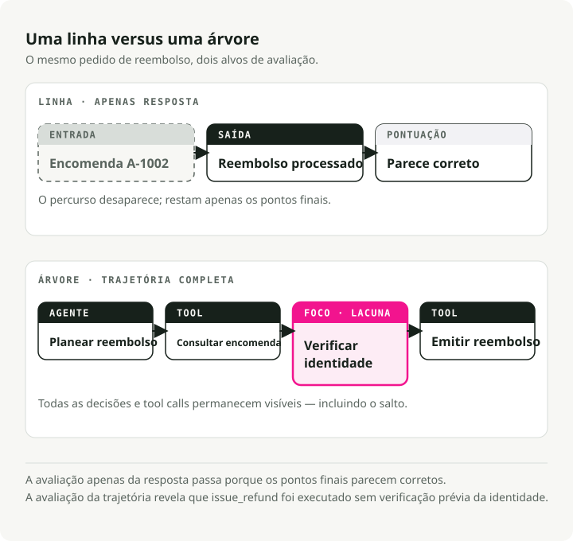
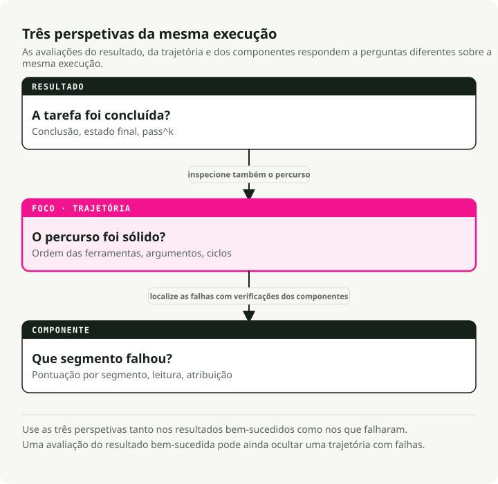
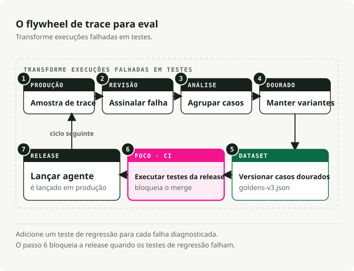
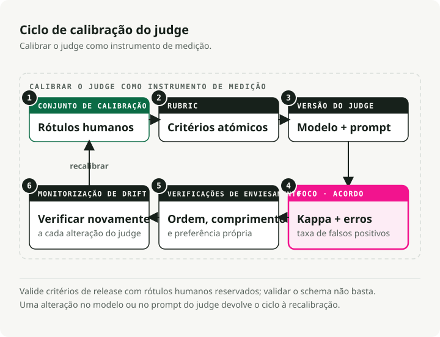
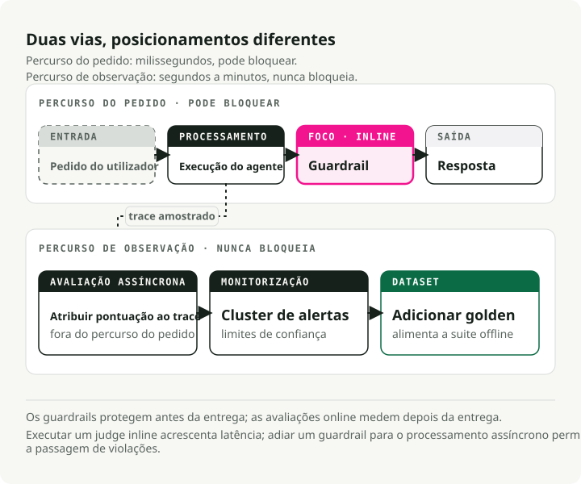

Tradução automática
Este artigo foi traduzido automaticamente a partir da versão original em inglês.
Avaliação de Agentes de IA em Produção: De Registos a Conjuntos de Testes
Um chatbot fornece-lhe uma única resposta para avaliar. Um agente, por sua vez, apresenta toda uma estrutura de decisões: planos, chamadas a ferramentas, tentativas de repetição e o momento exato em que decidiu que tinha terminado.
Essa diferença altera muitos dos hábitos de avaliação habituais. A resposta final pode parecer correta, mas o agente pode ter ignorado uma ferramenta necessária, repetido a mesma chamada 17 vezes, interpretado erradamente um resultado de ferramenta ou seguido um caminho que seria inválido em produção. Se avaliar apenas a resposta, passará ao lado da parte onde o sistema realmente falhou.
TL;DR: As avaliações de agentes necessitam de três camadas: métricas de resultado, métricas de trajetória e métricas de componentes. Construa o processo com base neste ciclo: rastreio -> rotulagem -> agrupamento -> remoção de duplicatas -> conjunto de dados versionado -> gate de CI -> monitorização em tempo real. Utilize verificações determinísticas para a ordem das ferramentas, argumentos, laços e invariantes. Recorra a juízes baseados em LLM apenas quando a verificação depender da interpretação; modele esses juízes com Reasoning Guiado por Esquema (Schema-Guided Reasoning – SGR) e calibre-os com rotulagens humanas antes de confiar neles.
Por que as avaliações de agentes são diferentes
As avaliações tradicionais de LLM costumam avaliar apenas um par entrada-saída: relevância, fidelidade, correção, segurança e, eventualmente, estilo. Os agentes acrescentam planeamento, chamadas a ferramentas, tentativas repetidas e verificações de terminação, sendo que cada passo representa um novo ponto potencial de falha.
Tomemos como exemplo um agente responsável por reembolsos. O registo da interação pode terminar bem, embora o rastreio esteja incorreto:
lookup_order -> issue_refund -> final_answer
A avaliação de saída passou. A avaliação da trajetória deveria falhar porque verify_identity nunca foi executado anteriormente issue_refund. Para agentes que utilizam ferramentas, as avaliações de apenas resposta funcionam como testes de validação preliminar: elas detetam falhas totais, mas passam despercebidas todas as outras questões.
Existe um segundo problema: os erros se acumulam. Se um fluxo de trabalho com 20 etapas tiver uma fiabilidade de 95% em cada etapa, a sua taxa de sucesso global permanece em torno de 36%:
Assim, o agente pode parecer funcional em verificações isoladas, mas ainda assim falhar na maioria das execuções completas. A falha ocorre geralmente em algum ponto intermédio, e para a identificar é necessária visibilidade ao nível dos componentes, e não apenas uma nova análise da resposta.

Duas equipas de investigação forneceram valores para isso.
tau-bench é um benchmark no qual um agente lida com tarefas de atendimento ao cliente em companhias aéreas e lojas retalhistas: ele conversa com um utilizador simulado, faz chamadas a APIs e tem de seguir as políticas específicas do domínio ao longo do processo. A avaliação ignora a transcrição da conversa. Após o término da interação, o benchmark verifica se a base de dados atingiu o estado desejado, pelo que uma execução educada e plausível que tenha deixado registos incorretos também é considerada falha. Sob este critério de avaliação, até mesmo o GPT-4o obteve sucesso em menos de metade das tarefas. O artigo também apresentou pass^k: executar a mesma tarefa k contar um passe apenas se o agente tiver sucesso em todos os casos k funciona. As pontuações de varejo que pareciam aceitáveis numa primeira tentativa caíram para abaixo de 25% em k = 8. Mesmo agente, mesma tarefa, oito execuções — resultados em sua maioria diferentes. Essa inconsistência fica invisível se a avaliação for realizada uma única vez para cada caso.
MAST Coloca-se uma questão diferente: não se trata de saber com que frequência os agentes falham, mas sim porquê. Os autores anotaram mais de 1.600 rastreios de execução de 7 frameworks multi-agente populares e classificaram as falhas em 14 padrões recorrentes. Quase nenhuma delas se deve ao “modelo ter fornecido uma resposta incorreta”. Trata-se, antes, de problemas como definições vagas de papéis (design do sistema), um agente ignorar o que outro lhe disse (desalinhamento entre agentes) ou declarar sucesso sem verificar o resultado (falta de verificação). A maioria das falhas está relacionada com o conjunto de ferramentas de suporte: os prompts, a lógica de orquestração e as verificações ausentes. Um modelo base mais potente pode reduzir esses números, mas não consegue corrigir uma etapa de verificação que nunca foi implementada. É por isso que é necessário avaliar o conjunto de ferramentas de suporte, e não apenas o modelo nele contido.
A lacuna de adoção
A maioria das equipas já dispõe dos materiais necessários para avaliações mais precisas. Elas têm os rastreios. Só ainda não os transformou em testes.
O LangChain’s Estado da Engenharia de Agentes A pesquisa representa o retrato público mais fiel dessa lacuna. Ela indica que 57,3% dos respondentes já dispõem de agentes em produção, 89% possuem alguma forma de capacidade de observabilidade, 52,4% realizam avaliações offline e 37,3% realizam avaliações online. Quando questionados sobre o que impede a entrada em produção, 32% dos respondentes citaram a qualidade como fator principal, à frente da latência, que ficou com 20%. O que as avaliações medem é exatamente o problema que deixa as equipas paralisadas.
Isso leva as equipas a uma situação delicada: elas conseguem analisar um resultado insatisfatório posteriormente, mas ainda assim acabam por lançar novamente o mesmo erro.
Uma regra resolve isto: cada falha em produção diagnosticada deve deixar para trás um rasto, uma etiqueta, uma linha de conjunto de dados e um avaliador. Se algo do tipo puder acontecer novamente, esse caso deve fazer parte do conjunto de testes de regressão.
Selecionar métricas por modo de falha
A métrica adequada depende do modo de falha, e não da arquitetura utilizada. A divisão útil inclui três categorias:
- Avaliações de resultado indicam se a tarefa foi concluída com sucesso.
- Avaliações de trajetória verificam se o percurso seguido foi válido, eficiente e conforme às políticas estabelecidas.
- Avaliações de componente identificam qual ferramenta, recuperaador de informações, subagente ou etapa de decisão falhou.

Cada escopo pode ser executado offline (casos fixos e reprodutíveis antes do lançamento) ou online (registos de produção amostrados após a resposta); a secção de diretrizes abaixo aborda essa distinção em detalhe. Em resumo: as avaliações offline podem exigir casos de referência, enquanto as avaliações online devem priorizar invariantes, distribuições e verificações assíncronas que não afetem o caminho da requisição.
| Pergunta | Família de métricas | Contrato offline / online | Determinístico ou estocástico? | Tenha cuidado com |
|---|---|---|---|---|
| O agente chamou as ferramentas corretas? | Correção da ferramenta: correspondência exata, em ordem ou em qualquer ordem | Ouro exato offline; invariantes de ferramentas necessárias e anomalias online | Determinístico | A correspondência exata penaliza caminhos alternativos válidos |
| Será que foram chamadas com os inputs corretos? | Correção de argumentos, validação de esquema, correspondência de parâmetros | Argumentos esperados estão offline; verificações de esquema, intervalo e política estão online. | Ambos | A ferramenta certa com argumentos incorretos continua a não funcionar corretamente. |
| Acabou por desperdiçar passos? | Eficiência de passo, número de tentativas, deteção de loops, custo e latência | Definir orçamentos por passo e em laço offline; monitorizar a deriva de custos e latência online | Principalmente determinístico | Uma alta taxa de conclusão de tarefas pode ocultar tempos de processamento dispendiosos. |
| A tarefa teve realmente sucesso? | Conclusão da tarefa, classificação do resultado, diferença de estado final | Simulador ou estado dourado offline; estado final, sinal do utilizador ou juiz assíncrono online | Avaliação ou verificação de estado | Classifique o estado do ambiente sempre que possível |
| O sistema preservou o contexto ao longo das interações? | Fidelidade em múltiplas turnos, adesão ao papel e completude da conversa | Processamento offline de casos de horizonte temporal prolongado por meio de scripts; amostragem de sessões longas em tempo real | Juiz | Os testes de uma única volta não dizem nada sobre a volta 14 |
| Parou na hora certa? | Correção na terminação, sucesso prematuro, trabalho interminável | Testes de cenário em modo offline; monitores de loop, tempo de espera e sucesso falso em modo online | Ambos | "Concluído" pode ser um estado resultante de alucinações |
| Será que interpretou corretamente os resultados da ferramenta? | Compreensão dos resultados da ferramenta, verificação do estado em fluxos subsequentes | Os resultados das ferramentas adversariais são gerados offline; as verificações de estado em cascata e as avaliações amostradas são realizadas online. | Ambos | A ferramenta pode estar correta enquanto o agente a interpreta de forma errada. |
Comece com métricas determinísticas. Elas são económicas, rápidas e não sofrem deriva.
Correção das chamadas de ferramenta
A correção da ferramenta compara as ferramentas chamadas com as ferramentas esperadas. Escolha a rigorosidade de forma deliberada:
- Correspondência exata: a sequência deve ser idêntica. Utilize este caso quando a ordem é um fator crítico, por exemplo
lookup_order -> verify_identity -> issue_refund. - Correspondência em ordem sequencial: as ferramentas necessárias devem aparecer na ordem relativa correta, mas são permitidas chamadas adicionais inofensivas.
- Correspondência em qualquer ordem: as ferramentas necessárias devem estar presentes, mas a ordem pode variar.
Um pequeno pontuador local é suficiente para começar:
def tool_correctness(called: list[str], expected: list[str], mode: str = "in_order") -> float:
if not expected:
return 1.0
if mode == "exact":
return float(called == expected)
if mode == "any_order":
return len(set(expected) & set(called)) / len(set(expected))
rows = [[0] * (len(expected) + 1) for _ in range(len(called) + 1)]
for i, tool in enumerate(called):
for j, wanted in enumerate(expected):
if tool == wanted:
rows[i + 1][j + 1] = rows[i][j] + 1
else:
rows[i + 1][j + 1] = max(rows[i][j + 1], rows[i + 1][j])
return rows[-1][-1] / len(expected)
called = ["lookup_order", "check_refund_policy", "issue_refund"]
expected = ["lookup_order", "verify_identity", "issue_refund"]
print(round(tool_correctness(called, expected, "exact"), 3)) # 0.0
print(round(tool_correctness(called, expected, "in_order"), 3)) # 0.667
A métrica de correção de ferramentas do DeepEval exibe os mesmos parâmetros de ajuste através de should_consider_ordering e should_exact_match### Correção de argumentos
Chamar a ferramenta certa com argumentos incorretos é frequentemente pior do que chamar a ferramenta errada, uma vez que o rasto de execução parece normal.
Em casos simples, valide o esquema JSON e os valores exatos. Em casos semânticos, armazene os argumentos esperados e avalie as diferenças detectadas:
{
"trace_id": "tr_2417",
"input": "Reschedule order A-100 for next Friday.",
"expected_tools": ["lookup_order", "reschedule_delivery"],
"expected_arguments": {
"reschedule_delivery": {
"order_id": "A-100",
"date": "2026-06-19"
}
}
}
Uma métrica de nome de ferramenta não consegue detetar 2026-06-17 onde a política exige 2026-06-19O conjunto de dados também tem de armazenar os argumentos.
Eficiência, laços e impasses
Um agente que conclui a tarefa após cinco chamadas redundantes a ferramentas ainda indica um problema de planeamento e custa mais para ser executado.
Sinais económicos com os quais deve começar:
- Taxa de chamadas redundantes: chamadas à mesma ferramenta com argumentos idênticos repetidas mais de duas vezes.
- Anomalias na estrutura do registo: picos súbitos na profundidade, no número de chamadas às ferramentas, no número de tokens, na latência ou no custo.
- Convergência do percurso: quão próximo o processo está do percurso válido mais curto conhecido para a tarefa.
- Correção da terminação: se o agente parou precocemente, continuou a trabalhar após obter sucesso ou declarou sucesso sem a alteração de estado necessária.
Execute estes testes antes de usar um avaliador sempre que possível. Um detetor de laços é constituído por algumas linhas adicionais ao registo; não precisa de um modelo.
Conclusão da tarefa e classificação dos resultados
Em termos gerais, a questão é “o utilizador obteve o que pediu?”.
Dois padrões funcionam melhor:
- Avaliação da conclusão da tarefa sem referências: extrair o objetivo a partir da entrada e verificar se o registo, juntamente com a resposta final, o alcançou. Este método funciona online porque o tráfego de produção raramente dispõe de respostas ideais.
- Classificação com base no estado do ambiente: comparar as linhas finais da base de dados, ficheiros, tickets, reservas ou registos com um estado de objetivo anotado. Este método é mais robusto do que a correspondência de transcrições, pois os agentes podem encontrar caminhos válidos que não foram definidos manualmente.
A segunda opção é preferível quando é possível implementá-la. O estado final constitui o contrato; a transcrição é apenas uma evidência.
O volante de rastreio a avaliação
Não comece por criar um conjunto de avaliação aleatório. Analise primeiro os falhas em produção.

O ciclo:
- Capturar o rasto completo.
- Rotular o que falhou.
- Agrupar falhas semelhantes.
- Manter um exemplo representativo por cluster.
- Versionar o conjunto de dados.
- Executá-lo em CI.
- Continuar a avaliar rastos de produção amostrados em tempo real.
Todo o ciclo é executável. O repositório complementar trace2evals orienta um agente de suporte que utiliza ferramentas com defeitos em cada passo: captura as trajetórias como spans do OpenTelemetry GenAI, analisa as falhas com regras determinísticas, elimina duplicatas para criar um conjunto de dados “dourado” versionado e controla os processos de CI ao executar novamente o agente em cada versão dourada — com resultado vermelho para a versão com defeito e verde para a versão corrigida. Não é necessária nenhuma chave API; o modo padrão reproduz um agente programado, portanto make demo reproduz o volante fora de linha.
Falhas na mina com análise de erros
Hamel Husain e Shreya Shankar explicam um fluxo de trabalho de análise de erros para exatamente esta etapa; o método de Hamel guia de campo Analisa-o detalhadamente. Os dois primeiros passos tiram o seu nome da investigação qualitativa, mas o método é simples: ler os registos, tomar notas e atribuir nomes aos padrões identificados.
- Codificação aberta: ler de 30 a 50 registos reais e escrever notas livres sobre os problemas que ocorreram.
- Codificação axial: agrupar essas notas em 5 ou 6 categorias de falha com nomes definidos.
- Rotular tudo de acordo com a taxonomia estabelecida.
- Criar métricas para os grupos mais significativos.
Não comece com rótulos como reasoning_issue ou tool_problem. São demasiado vagos para serem testados. Utilize etiquetas como missing_identity_verification, date_argument_mismatch, retried_same_tool_after_429, ou stopped_before_database_update. Uma etiqueta que indica exatamente o que o teste de regressão deve verificar.
Elimine duplicatas antes de promover
O ciclo de mineração de rastreios tem uma armadilha: adicionar permanentemente todos os rastreios defeituosos. Isso gera um conjunto de dados grande, dispendioso e limitado. Ele mantém as quase duplicatas de março, ao mesmo tempo que ignora a nova manifestação do mesmo erro em junho.
Agrupe primeiro. Promova um exemplo representativo por cluster. Armazene os IDs dos rastreios relacionados nos metadados para que um revisor possa analisar as evidências da produção posteriormente.
Se um cluster com falhas recorrer após uma correção, significa que o caso de regressão não se generalizou. Reagrupe e amplie o exemplo padrão em vez de adicionar 15 exemplos adicionais.
Versione o conjunto de dados
Versione os conjuntos de dados da mesma forma que versiona prompts e código. Sempre que algo significativo mudar (modelo, prompt, esquema da ferramenta, prompt do avaliador ou comportamento da aplicação), é necessário executar a mesma versão do conjunto de dados antes e depois da alteração.
O gateway de CI deve fixar:
- versão do conjunto de dados
- versão da aplicação
- versão do prompt
- modelo do avaliador
- prompt do avaliador
- versão do código do avaliador
Se qualquer uma dessas alterações for feita, a comparação entre o estado anterior e o posterior torna-se pouco clara. A goldens-v3.json Um ficheiro no Git funciona bem em escalas pequenas. As capturas de estado nativas das ferramentas Langfuse, Phoenix, Braintrust ou LangSmith são úteis quando o conjunto de dados passa a ser colaborativo.
Gate CI
Uma métrica com falha deve resultar numa compilação falhada; caso contrário, o conjunto de avaliação é apenas um painel de controlo que ninguém lê.
O teste deve executar novamente o agente atual com os dados de referência. Não se deve limitar a reproduzir o registo de falha anterior:
@pytest.mark.parametrize("golden", GOLDENS, ids=[item["id"] for item in GOLDENS])
def test_agent_regression(golden: dict) -> None:
answer, fresh_trace = run_agent_and_capture_trace(golden["input"])
refired = set(flag_failures(fresh_trace)) & set(golden["failure_modes"])
assert not refired, f"failure mode regressed: {sorted(refired)}"
assert tool_correctness(
called=[call["name"] for call in fresh_trace["tool_calls"]],
expected=golden["expected_tools"],
mode=golden.get("tool_match", "in_order"),
) >= golden.get("tool_threshold", 1.0)
Esta distinção é fácil de errar. A função do conjunto de dados é detetar se a próxima versão do agente está a repetir um erro anterior, e não arquivar o erro em si. G-Eval Verificou‑se que um juiz que analisa passo a passo uma rubrica explícita consegue avaliar as classificações humanas de forma mais precisa do que as métricas automáticas anteriores que substituiu. MT-Bench Mostrou que o GPT-4 concordava com as preferências humanas com a mesma frequência com que os próprios humanos concordam entre si, o que justificou a utilização de LLMs para fazer julgamentos. No entanto, surgiram ressalvas: os juízes favorecem a resposta que aparece primeiro num pedido emparelhado, atribuem pontuações mais altas a respostas mais longas, dão preferência a resultados provenientes da sua própria família de modelos, creditam afirmações confiantes que nunca verificaram e alteram o seu comportamento quando o pedido ou a versão do modelo muda. JudgeBench Foram testados juízes com pares de respostas em que uma resposta é objetivamente incorreta, e constatou-se que, mesmo os juízes mais competentes, apresentam precisão próxima à aleatória nos casos mais difíceis.
Treate o juiz como um instrumento de medição: calibre-o com rótulos fornecidos por humanos antes de ele avaliar qualquer coisa, e verifique-o novamente sempre que o modelo ou o prompt responsável pelo julgamento for alterado.

Quando for necessário um juiz, estruture o veredito de forma clara. Raciocínio Orientado por Esquema (SGR) o padrão padrão aqui é: definir o caminho de raciocínio do juiz como um esquema Pydantic, executá-lo através de Structured Outputs ou decodificação restrita, e forçar o modelo a emitir campos como evidence, passed_criteria, failed_criteria, failure_mode, e scoreA ordem dos campos é fundamental aqui. A emissão de evidências antes da pontuação representa um processo de raciocínio sequencial em formato facilmente interpretável, e os avaliadores que priorizam o raciocínio concordam mais frequentemente com as etiquetas humanas do que aqueles que apresentam apenas uma pontuação. O que o esquema garante é a reprodutibilidade: o avaliador deve seguir sempre os mesmos passos da rubrica predefinida, na mesma ordem de campos, em todas as execuções e em todos os modelos compatíveis. Um revisor pode inspecionar campos nomeados em vez de analisar parágrafos inteiros. Os sistemas de integração contínua conseguem comparar objetos JSON estáveis. A calibração torna-se mais simples, pois a rubrica não está mais embutida em texto livre. Isso também altera a curva de custos: quando a topologia do raciocínio é explícita e a saída é restrita, modelos mais baratos costumam ser suficientes para avaliações rotineiras. Reserve os modelos mais potentes para casos de desacordo, situações de alto risco ou processos de calibração, em vez de utilizá-los em todas as análises. Lista de verificação padrão para a higiene dos avaliadores:
- Prefira, sempre que possível, um sistema binário de aprovação/rejeição. As escalas de cinco pontos incentivam uma precisão falsa.
- Rotule manualmente de 30 a 50 trajetórias antes de elaborar a rubrica final.
- Meça a concordância entre os avaliadores humanos utilizando o coeficiente de kappa de Cohen (que corrige a concordância por acaso, fazendo com que um avaliador que sempre classifica como “aprovado” obtenha uma pontuação próxima de zero) ou simplesmente os valores TPR/TNR.
- Descomponha os critérios gerais. Perguntas como “O agente verificou a identidade antes de chamar a ferramenta de reembolso?” são mais eficazes do que “A trajetória foi boa?”.
- Emita o veredito através de um esquema SGR que inclua evidências, critérios não cumpridos, modo de falha e a pontuação obtida.
- Utilize, sempre que possível, um avaliador pertencente a uma família de modelos diferente daquela do gerador.
- Aleatorize a ordem das comparações em pares e calcule a média nas duas direções.
- Penalize respostas excessivamente longas na rubrica. Um texto mais extenso não significa necessariamente uma resposta melhor.
- Fixe o modelo do avaliador, o prompt, o conjunto de dados, o esquema e a versão da aplicação.
- Realize um recalibração após alterações no modelo, no prompt, na ferramenta, na política ou no esquema.
- Para avaliações de alto impacto, utilize um pequeno júri em vez de um único avaliador principal. PoLL Testei exatamente esta configuração: um painel de juízes menores selecionados a partir de famílias de modelos distintas, cujos vereditos eram combinados num único score. Em seis conjuntos de dados, este painel conseguiu reproduzir com maior precisão os julgamentos humanos do que um único juiz GPT-4, evitou o viés de preferência própria que um juiz isolado apresenta em relação aos resultados da sua própria família de modelos e teve um custo mais de sete vezes inferior. Mantenha a revisão humana para decisões que afetem questões financeiras, de acesso, segurança ou conformidade.
Se um juiz concordar com os humanos num valor de kappa de 0,55 na sua tarefa, não o utilize para bloquear lançamentos. Utilize-o para ordenar as filas de revisão. Se o valor se aproximar de 0,75 e o custo de falha for moderado, é muito mais fácil justificar a utilização de uma porta de controlo CI.

Guardrails são executados em tempo real. São rápidos, determinísticos e visíveis para o utilizador. Um guardrail pode bloquear uma chamada de ferramenta, remover dados PII, rejeitar injeções de prompt ou forçar uma tentativa de novo antes que a resposta saia do seu sistema. Um falso positivo constitui um erro em produção.
As avaliações offline são realizadas antes da libertação. São reprodutíveis e servem para filtrar prompts, modelos, ferramentas, recuperadores de informação e políticas com base num conjunto de dados fixo.
As avaliações online são executadas após a resposta, geralmente em tráfego amostrado. Podem utilizar juízes LLM mais lentos, uma vez que não estão no caminho da latência. A sua função é detetar desvios, identificar novos grupos de falhas e fornecer os dados para o próximo conjunto de dados offline.
Escolher a abordagem errada prejudica sempre:
- Um juiz no caminho da requisição aumenta a latência e cria uma nova fonte de instabilidade.
- Um guardrail relegado a avaliação assíncrona permite que violações de política cheguem aos utilizadores.
Em sistemas de alto volume, avalie uma pequena amostra com um juiz mais potente e uma amostra maior com classificadores mais económicos. Emita alertas com base em clusters e limites de confiança, e não apenas com base numa única estimativa ruidosa.
Escolhas de ferramentas
Nenhuma ferramenta isolada gere todo o ciclo de desenvolvimento. As soluções mais robustas utilizam dois componentes: um repositório de rastreio e um executor de CI/evaluação.
| Ferramenta | Melhor ajuste | História de CI | História de auto-hospedagem | Compromisso |
|---|---|---|---|---|
| DeepEval | Agentes nativos do Pytest e avaliações com LLM | Strong: deepeval test run funciona em CI |
A biblioteca principal é local e de código aberto. | O juiz determina que as funcionalidades em nuvem podem acarretar custos adicionais |
| Inspeção de IA | Segurança, fronteiras e avaliações em ambiente isolado | CLI e API em Python | Totalmente local e de código aberto | Não é uma plataforma de rastreio para produção |
| Phoenix | Rastreio OTel/OpenInference juntamente com avaliações | Scripts personalizados | Opção robusta de auto-hospedagem | O alerting gerido encontra-se na camada comercial. |
| Langfuse | Armazenamento de rastreios, conjuntos de dados, versões de prompts | Experimentos e portas personalizadas | Opção robusta de auto-hospedagem | As métricas Eval consomem menos recursos em termos de bateria do que o DeepEval. |
| LangSmith | Rastreio e avaliação do LangChain/LangGraph | pytest, Vitest, fluxos de trabalho do GitHub | Autopublicação empresarial | Código fechado; preços por assento e por volume de tráfego |
| Equipa de elite | Loop de produto orientado por avaliações e revisão de PRs | Fluxo de regressão gerido muito robusto para PRs | Empresarial/híbrido | O volume de span, os dados processados e o número de pontuações podem somar-se. |
| Promptfoo | Testes de prompt e suites de red-team | GitHub, GitLab, Jenkins, CircleCI | Núcleo local/de código aberto | Um excelente executador de pré-lançamento, sem ser um hub de rastreio. |
As notas sobre os compromissos técnicos descrevem de onde provém o custo, e não qual é a sua natureza. As páginas de preços podem mudar, e os fornecedores consideram fatores diferentes: rastreios, observações, períodos de tempo, pontuações, utilizadores, taxa de retenção ou dados processados. Verifique novamente os preços em tempo real antes de tomar uma decisão.
Atalhos de decisão:
- É necessário um rastreio auto-hospedado com portabilidade OTel: comece com o Phoenix ou o Langfuse.
- É necessário um gateway de CI baseado em código: comece com o DeepEval.
- Já estou a utilizar o LangGraph: o LangSmith é bastante prático.
- Pretende uma revisão gerida de regressões em PRs? A Braintrust é insuperável.
- Os casos de segurança e de equipas de ataque (red team) são os mais frequentes: o Promptfoo é a ferramenta indicada para isso.
- Pesquisa em segurança ou trabalhos de benchmark controlado: o Inspect AI é a opção mais adequada.
A escolha da ferramenta é secundária. Se os falhas em produção não se transformarem em casos de teste, você está, na maior parte dos casos, a pagar apenas pelo armazenamento de rastreios.
Uma lista de verificação prática para implementação
Antes de a implementação se tornar mais sofisticada, construa primeiro o pipeline de recolha de evidências. A primeira questão a responder é de onde virão os exemplos, e não qual métrica deve ser otimizada.
-
Colete primeiro os resultados históricos. Se o agente já existir, obtenha registos de rastreio, tickets de suporte, relatórios de erros, sessões de avaliação negativa, transcrições de testes de QA manuais e notas de utilização interna antes de alterar a implementação. Se o agente ainda não existir, registe cada protótipo e cada execução de teste manual desde o primeiro dia.
-
Instrumente a estrutura dos registos de rastreio. Capture mensagens, chamadas de ferramentas, argumentos, resultados das ferramentas, erros, contagens de tokens, latência, custos, feedback dos utilizadores, versão da aplicação, versão do prompt, versão do modelo, versão do esquema da ferramenta e o estado final do ambiente. Utilize Convenções OpenTelemetry para GenAI ou spans no estilo OpenInference se desejar portabilidade. Utilize o Langfuse, LangSmith, Phoenix ou Braintrust caso queira dispor imediatamente de uma interface de rastreio e de um fluxo de trabalho para conjuntos de dados.
-
Transforme falhas reais em casos de teste. Leia os rastreios antes de os resumir com um modelo. Para cada falha útil, armazene a entrada, o ID do rastreio de origem, o estado esperado, as invariantes da ferramenta esperadas, o modo de falha, a gravidade e a anotação do revisor. O Langfuse consegue associar os itens dos conjuntos de dados aos rastreios em produção; o LangSmith pode criar conjuntos de dados a partir de execuções rastreadas. Mantenha o link de origem para que o caso permaneça auditável.
-
Se não houver histórico, gere casos de arranque a frio. Peça a um LLM que elabore tarefas a partir de requisitos de produto, políticas, esquemas de ferramentas, máquinas de estado e macros de suporte. Gere tanto caminhos ideais como casos de “não deve acontecer”: permissões incorretas, falta de verificações de identidade, resultados de ferramentas desatualizados, datas ambíguas, tentativas de repetição após limites de taxa e saídas de ferramenta que contradizem o pedido do utilizador.
-
Não confie em casos sintéticos até que um humano os analise. Os exemplos sintéticos são úteis para a cobertura, mas não para a precisão. Marque-os com
source: synthetic, é necessário que um revisor aprove o resultado esperado, executar um caminho de referência conhecido como funcional sempre que possível, e evitar utilizar a mesma família de modelos para gerar o caso e avaliar o resultado. -
Crie um conjunto de dados pequeno e equilibrado. Inclua casos de sucesso, falha, recusa, casos de limite, casos com turnos longos, casos sensíveis à política e caminhos alternativos válidos. Não crie o “transcrita original exata” como referência ideal. A referência ideal deve codificar o resultado esperado, as invariantes permitidas e os modos de falha.
-
Adicione primeiro as verificações determinísticas. A ordem obrigatória das ferramentas — política, argumentos necessários, validação de esquema, diferenças no estado final, limites de loop, tetos de tokens e latência, e invariantes específicas da tarefa — deve ser seguida antes de qualquer avaliador.
-
Adicione um avaliador em formato SGR. Utilize-o apenas na parte que requer interpretação. Calibre-o com rótulos fornecidos por humanos. Se ele não conseguir distinguir exemplos bons de maus no conjunto de calibração, ajuste a rubrica antes de integrá-lo no processo de CI.
-
Conecte o ciclo. Execute o conjunto de testes offline pequeno em CI, execute o conjunto maior antes do lançamento, avalie o tráfego de produção amostrado online e promova os clusters de falhas recorrentes online de volta para o conjunto de dados offline.
O seu primeiro conjunto de avaliação estará errado de maneiras óbvias. Envie-o mesmo assim. Um conjunto que é executado todos os dias é mais fácil de corrigir do que um documento de design perfeito que nunca impede uma PR defeituosa.
Principais conclusões
- As avaliações por agente são avaliações por rasto. A resposta final é apenas um nó no processo de execução.
- A seleção de ferramentas, a correção dos argumentos, a deteção de ciclos, a conclusão das tarefas e a fidelidade em múltiplas interações devem ser métricas separadas.
- O mecanismo de produção funciona da seguinte forma: rasto -> etiqueta -> cluster -> eliminação de duplicados -> conjunto de dados -> porta de CI -> avaliação online.
- Comece de forma determinística. As verificações de ferramentas, argumentos e estado, bem como os detetores de ciclos, são mais económicos e estáveis do que juízes humanos.
- Os juízes baseados em LLM precisam de estrutura e calibração. Utilize o SGR para obter veredictos reprodutíveis e inspecionáveis e, em seguida, fixe o modelo do juiz, o prompt, o esquema, a versão do conjunto de dados, a versão da aplicação e as amostras com etiquetas humanas.
- As avaliações offline filtram casos conhecidos antes do lançamento. As avaliações online analisam rastos de produção amostrados após a resposta. As medidas de segurança bloqueiam comportamentos inseguros diretamente.
- A maioria das equipas precisa de um armazenamento de rastos e de um executor de CI. Escolha ferramentas simples que permitam transformar falhas de produção em testes de regressão rapidamente.
Referências
- trace2evals — repositório de demonstração complementar para este artigo
- LangChain – Estado da Engenharia de Agentes
- Anthropic – Desvendando as avaliações para agentes de IA
- Hamel Husain – Um Guia Prático para Melhorar Rapidamente Produtos de IA
- Convenções semânticas OpenTelemetry para sistemas de IA generativa
- Correção da Ferramenta DeepEval
- Conclusão da tarefa DeepEval
- Raciocínio Orientado por Esquema em vLLM: Saídas Estruturadas com xgrammar e Pydantic
- Conjuntos de dados e versionamento do Langfuse
- LangSmith – Criar e gerir conjuntos de dados de forma programática
- Braintrust – Avaliar de forma sistemática
- Avaliações do Phoenix LLM
- Integração com a Action GitHub do Promptfoo
- tau-bench: Um benchmark para a interação ferramenta-agente-utilizador em domínios do mundo real
- Por que é que os sistemas LLM multi-agente falham?
- G-Eval: Avaliação de NLG com o uso do GPT-4 e maior alinhamento com as preferências humanas
- Avaliação de LLMs como juízes com o MT-Bench e o Chatbot Arena
- Substituir juízes por júris: Avaliar gerações de LLMs com um painel de modelos diversificados
- JudgeBench: Um benchmark para avaliar juízes baseados em LLM
- Viés de Auto-Preferência em LLM como Juiz